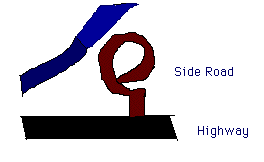
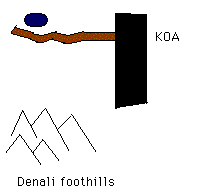
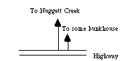
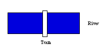
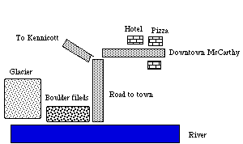
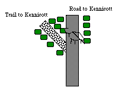
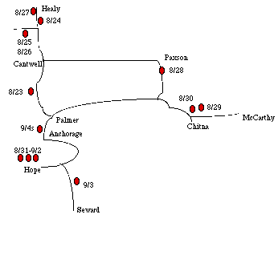

8/23/94
Well, we're off. We're on the runway in
Seattle, backing up about to take off for
Anchorage. The plane is uncomfortable,
to say the least, but hey, what should I
expect. We'll be there soon.
8/23-contd
We met Lisa at the Airport. She and Ross
were sitting there in full grunge style
waiting for us to show up. We picked up
the Barney colored Ford Explorer &
headed out - first to the Gibbs's and then
to REI and safeway. Lisa got a backpack
at REI, we got food at Safeway, and drove
off North towards Denali. We stopped
along the way at an OK campground along
a river and set up camp.

8/24
Got up the next morning and headed out
towards Denali. Stopped along the way
at a view point and got to Denali around
12:30. No campsites available, not much
backcountry stuff available. So we went
to a KOA, set up our tents and went for
a little hike along Stampede Rd.

There was a little lake at the end that we hiked
down to. There was anice view of the mountains.
The we went back to the KOA and hung out
in the wind and then the rain. Had beans and
cheese and tortillas for dinner, Went to sleep
early.
8/25/94
Got up early to catch the camper bus into
the park. It was pretty miserable in the morning
- cold, windy, wet. But, we headed off. Lisa,
Ross, and Pasqual got on the bus and MB and
I waited for the next one. We headed out and
it started to clear up. It's been clear ever since.
We got to camp at Sanctuary River after seeing
a Willow Ptarmigan pair and a Dall Sheep.
They had set up camp and picked good sites.
We set up our tent and had lunch and then went
on a hike. We hiked up the road and then up a
hill and around and back.
For dinner, we had freeze-dried meals. They
were OK but a little small. So we took some of
the free food (beans and hummus) to supplement
our meal. We then went to sleep.
8/26/94
Got up ~7 am. Waited for Mike and Cindy.
They got in around 10 am. After a bvrief delay MB
and I stayed aroudn while they went on a hike.
We went for a little hike up the road. I saw a three-toed
woodpecker around camp and a Colias across the river.
Then I went birdwatching across the road and when
I got back everyone was there. We had freeze-dried
dinners again.
8/27/94
Got up early and Pasqual, MB, Lisa,
Ross and I headed to Eilson Visitor Center
on the Bus. We didn't eat breakfast and we
didn't grab too much food. We didn't see much
of anything along the way - a few Dall Sheep,
a fox (silver-tailed) with a ptarmigan in its
mouth. It was snowing along the way and
very cold. At Eilson we watched other people
eat and went for a very short hike. Then, cold
and hungry, we got onto a bus back. It was
clearing and warmer but we still didn't see
much of anything. A trio of foxes, a few
caribou, not much else.
Then we got back to camp and packed
up and left and abandoned Mike. We left
him a note, caught the 4:55 shuttle bus we
had reservations for, and went to the visitor
center. Didn't see much on the way back
except some very weird people.
We packed up, went to the KOA to
shower, had dinner at the Sourdough Cafe
and then found a site on the side of the
highway and set up camp (Bought MB a
birthday present - earrings at the gift shop).
8/28
Got up - went to the visitor center - no bus
'til 12:45 - went to breakfast at the Sourdough
Cafe. Bought groceries and waited. Mike
actually showed up after a brief delay and we
headed off on the Denali Highway. It was
beautiful - an amazing ride. Saw some
trumpeter swans - stopped many times and
finally made it out. We found a campsite
called Paxson Lake which was very very nice.
Set up camp late and went to sleep.
8/29/94
Got up late - broke camp around 11-11:30
and headed towards Wrangell. After more
delays we got to the park headquarters and
after listening to the ranger and watching the
movie about Kennicott - and waiting more -
we headed to Chitna.
Chitna was cool - hippyish and artsy.
Then we decided to check out Nugget Creek
campground. After Mike missed the turn we
headed up a nasty dirt road and stopped at a
creek crossing and hiked in a ways to a nice
campsite. Cooked on the path and spent ~45
minutes trying to tie a bear bag. But we did it.

8/30
Got up early and hiked out. Pasqual
was behind as usual but we left anyway.
We got to the stream - I hiked across and
then drove the Explorer over the creek. We
made breakfast. Pasqual finally showed up
and we drove and drove and drove and drove
'til we got to McCarthy.

We took the tram across and hiked to town.

We hung out for a while while Lisa and Ross
headed to Kennicott. Then Pasqual decided to
go for a walk and so did we. We headed up the
road to McCarthy and we thought we saw a
small black bear cross the road.

We stopped and then headed up the trail to
Kennicott and we saw the bear again. It took off
into the woods. We waited and then Pasqual
came down the road. He had seen a momma
and a baby.
We then went out to the boulder fileds on
the river and then we had Pizza in town (it was
very good). Finally we left (after a strange encounter
with a kid who had the same birthday as me).
We drove back and camped just outside of
Chitna at a very nice campground along the river.
8/31
I'm 26. Got up and drove to Chitna where we met
Mike and headed down the road. We drove all the
way to Hope. We saw a big male caribou along the
way but not much else. We also stopped at a gas
station that was closed and had "crime scene" tape
all around it. It turns out someone had been beaten
up with a baseball bat.
Then we went to Safeway and REI and finally
got to Hope where we camped at Porcupine Campground.
9/1
Hiked out to Gull Rock for a very very long hike
along the Turnagain arm. This was after dropping
Lisa and Ross at the Resurrection Pass trailhead.
MB and I went on our own. I saw a white-winged
crossbill. Finally we got there and had lunch. Then
we got cold and made a fire and finally Mike, Pasqual,
and Cindy showed up.
We hung out for a few hours and finally headed
back. We got back exhausted. Gull Rock was OK -
nice view - it would be a great place to camp - but
a pain to find. The marking were very very poor.
9/2/94
Got up late. Hiked down to the beach below. Then
MB and I hiked in to Hope cutting through someone's
backyard. We wandere din to Hope - had some coffee
and then walked home.
Then I dropped Mike and Cindy at the Resurrection
Creek Road. I went back and we hung out for a while.
Then Mike and Cindy returned.
9/3
We got up pretty late and left camp and went for a
hike on the Resurrection Creek trail. We hiked for
about 4 miles. The trail was heavily used and
crowded (compared to the rest of Alaska).
MB and I turned around and went back and
slept in the truck. When M, C, and P got back
we drove off towards Seward. All the campgrounds
were full and we ended up staying in Hell's Kitchen,
a grassy plot in a constructions site. It smelled of
sewage, the showers and bathrooms were filthy,
but it was a place off the highway. I should send a
complaint to Chevron.
9/4/94
Packed up and drove to Seward. Had breakfast at
Don's Kitchen - tons and tons of food. Then we took a
2.5 hour $40 tour of Resurrection Bay. We saw otters,
sea lions, puffins, bald eagles, kittiwakes, and some
other things. It was OK.
Then we wandered around Seward and headed to
pick up Lisa. We saw lots of beluga whales in Turnagain
arm on the way back. We split up after much fighting
and MB, P, and I stayed at a Best Western on Speward
and M, C, L, and R stayed at the Speward Motel.
We took showers, had dinner at Mc'Ds and packed.
9/5
Got up. Waited forever to be seated at the Lounge.
P and MB had breakfast and then we met M, C and R
and drove to the fair in Palmer. The fair was pretty
lame overall.
